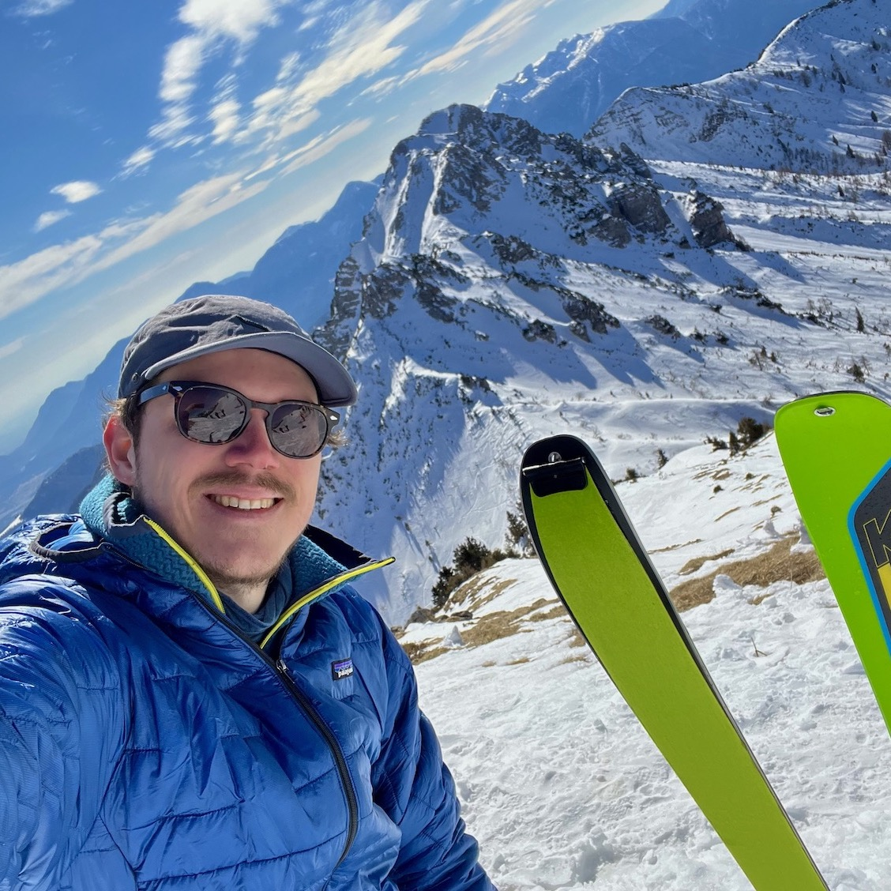

As a Senior Engineering Manager at Elastic, I lead a global team across 8 time zones, managing authentication, authorization, and user systems that handle tens of thousands of requests per minute.
My focus is on building high-performing teams where everyone contributes their best work. I create inclusive environments that bring out diverse perspectives and innovative solutions.
I prioritize operational excellence and exceptional customer experiences while embracing a "progress over perfection" mindset. This approach helps us deliver meaningful improvements that matter to users.
By balancing technical needs with thoughtful leadership, we build robust security solutions that scale without compromising quality or team wellbeing.
I love Open Source and enjoy designing developer tooling with a focus on performances and developer experience. I'm one of the lead maintainers of Fastify, a speedy web framework for Node.js, but I also contribute to many other Open Source projects.
I enjoy speaking at conferences, in the past years I've spoken at FullStackCon in London, Nordic.js in Stockholm, Codemotion in Milan, WebExpo in Prague and other amazing conferences and meetups around Europe.
If you want to contact me, drop me a message on LinkedIn, Twitter, Mastodon, Bluesky, or Threads, more personal stuff on Instagram. You can also find me almost everywhere as @delvedor.